Tema 3.B.34
La OMC. Los acuerdos distintos de los de mercancías.
AGCS (modos de suministro, listas), ADPIC (patentes, Doha y salud pública), contratación pública, comercio electrónico y plurilaterales de la OMC.
Exclusivo Material exclusivo de victorgutierrezmarcos.es y la app Oposición TCEE · DCE. Puedes usarlo libremente para tu estudio personal. No se autoriza su incorporación a otras plataformas, aplicaciones o servicios. Condiciones de uso.
Introducción
Enganche:
«Ojos que no ven, corazón que no siente», dice el refrán. Los servicios eran las partidas invisibles de la balanza de pagos, y sus barreras también lo son: no hay arancel en la frontera, sino una licencia que no se concede, un título que no se reconoce o un límite al capital extranjero. Lo mismo pasa con las ideas: buena parte del valor de un teléfono móvil o de un medicamento es diseño, programas y patentes.
En marzo de 2026, en la Conferencia Ministerial de Yaundé, expiró por primera vez desde 1998 la moratoria que impedía a los miembros de la Organización Mundial del Comercio (OMC) poner aranceles a las transmisiones electrónicas: lo invisible podía pasar a pagar en la frontera.
La pregunta que recorre la exposición es: ¿se pueden poner reglas comunes a un comercio que no se ve?
Relevancia:
Los servicios son el comercio que más crece: en 2025 el mundo exportó 9,6 billones de dólares en servicios comerciales, más de la cuarta parte (el 27,5 %) del comercio total de bienes y servicios comerciales, y casi la mitad del valor añadido que se exporta.
La propiedad intelectual es el activo de las economías avanzadas: los cobros por su uso superan los 600.000 millones de dólares al año y se concentran en unos pocos países.
Para España, una gran exportadora de servicios (turismo, ingeniería, construcción, servicios a empresas) y de productos con indicación geográfica (vinos, aceite, jamón), los intereses son sobre todo ofensivos; negocia a través de la Unión Europea, que tiene la competencia exclusiva en política comercial, también en servicios y propiedad intelectual [ver tema 3.B.41].
Contextualización:
De dónde viene: la OMC nació el 1 de enero de 1995 del Acuerdo de Marrakech, que cerró la Ronda Uruguay del Acuerdo General sobre Aranceles Aduaneros y Comercio (GATT). Su organización, sus principios y los acuerdos sobre mercancías se estudian aparte [ver tema 3.B.33].
Qué es un acuerdo «distinto de los de mercancías»: de los 4 anexos del Acuerdo de Marrakech (figura 1), el 1A regula las mercancías; todos los demás son el objeto de esta exposición:
el Acuerdo General sobre el Comercio de Servicios (AGCS, o GATS por sus siglas en inglés), en el anexo 1B;
el Acuerdo sobre los Aspectos de los Derechos de Propiedad Intelectual relacionados con el Comercio (ADPIC, o TRIPS), en el anexo 1C;
el Mecanismo de Examen de las Políticas Comerciales (MEPC), en el anexo 3, y las reglas de solución de diferencias del anexo 2 en lo que tienen de propio para estos acuerdos;
los acuerdos plurilaterales del anexo 4, sobre todo el de Contratación Pública, y las nuevas iniciativas entre grupos de miembros (comercio electrónico, facilitación de las inversiones, reglamentación nacional de los servicios).
Por qué entraron en la Ronda Uruguay: fue un gran intercambio. Los países desarrollados querían reglas para sus servicios y sus patentes; los países en desarrollo aceptaron a cambio de que la agricultura y los textiles volvieran a las reglas del GATT [ver tema 3.B.33].
Problemática:
¿Por qué hace falta un acuerdo para los servicios, si sus barreras no son aranceles?
¿Debe un acuerdo comercial obligar a proteger la propiedad intelectual, y a quién beneficia?
¿Cómo avanza la OMC en lo nuevo (compras públicas, comercio digital, inversiones) cuando no hay consenso?
Estructura:
La exposición sigue los anexos, de lo más amplio a lo más reciente, y cada acuerdo se cuenta con el mismo patrón: qué regula y por qué importa, qué dice la teoría, qué contiene, cómo se ha negociado y qué valoración merece:
I. El Acuerdo General sobre el Comercio de Servicios (I), con la economía de las barreras regulatorias.
II. El Acuerdo sobre los ADPIC (II), con la economía de la protección de la propiedad intelectual entre el Norte y el Sur.
III. Acuerdos plurilaterales y otros acuerdos (III): la contratación pública (con la economía del sesgo nacional), las nuevas iniciativas, la transparencia y la situación actual.
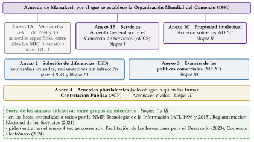
Fuente: elaboración propia a partir de OMC, «Panorama general: guía de navegación», y de las páginas de las iniciativas conjuntas.
3.B.34. La OMC. Los acuerdos distintos de los de mercancías
Introducción2′30″
I. El Acuerdo General sobre el Comercio de Servicios (AGCS)10′
1. Delimitación e importancia del comercio de servicios
2. Motivación económica: las barreras regulatorias
3. Estructura del AGCS
4. Evolución de las negociaciones
5. Valoración y perspectivas
II. El Acuerdo sobre los ADPIC9′30″
1. Delimitación e importancia de la propiedad intelectual
2. Motivación económica: la protección entre el Norte y el Sur
3. Estructura del ADPIC
4. Evolución de las negociaciones: de la OMPI a la salud pública
5. Valoración y perspectivas
III. Acuerdos plurilaterales y otros acuerdos7′
1. El Acuerdo sobre Contratación Pública
2. Otros acuerdos e iniciativas
3. Transparencia y solución de diferencias
4. Situación actual
Conclusión1′
I. El Acuerdo General sobre el Comercio de Servicios (AGCS)
Empezamos por el acuerdo más amplio de los distintos de los de mercancías.
Conclusión anticipada: el AGCS llevó por primera vez el comercio de servicios a reglas multilaterales con una arquitectura propia, pensada para barreras que no son aranceles sino regulaciones: 4 modos de suministro, obligaciones generales y compromisos específicos en listas positivas. Su gran mérito es la transparencia y la seguridad jurídica; su límite, que liberalizó poco más de lo que ya estaba abierto.
I.1. Delimitación e importancia del comercio de servicios
I.1.1. Qué es un servicio y cómo se comercia
Definición: un servicio es el resultado de una actividad que cambia el estado de quien lo recibe o facilita el intercambio de bienes o de activos financieros; a diferencia de un bien, en general no se puede almacenar ni transportar, y se produce y consume a la vez.
La consecuencia para el comercio: como muchos servicios exigen que proveedor y cliente estén en el mismo sitio, para comerciarlos tiene que moverse alguien, el cliente, el proveedor o su empresa. Por eso el AGCS define, en el párrafo 2 de su artículo primero, el comercio de servicios por 4 modos de suministro (figura 2):
Modo 1, suministro transfronterizo: cruza la frontera el servicio, no las personas (un informe jurídico enviado por correo electrónico, un servicio de programación a distancia).
Modo 2, consumo en el extranjero: cruza el consumidor (el turista, el estudiante que se matricula fuera, el barco que se repara en un astillero extranjero).
Modo 3, presencia comercial: el proveedor se establece en el otro país con una filial o una sucursal (un banco, una cadena hotelera). Es inversión directa [ver tema 3.B.18].
Modo 4, presencia de personas físicas: se desplaza temporalmente el proveedor o un empleado suyo, sin entrar en el mercado de trabajo del otro país (un consultor, un ingeniero que instala una máquina).
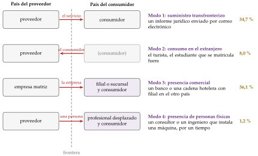
Fuente: elaboración propia a partir del párrafo 2 del artículo primero del AGCS y de OMC, Trade in services by mode of supply (TISMOS); peso de cada modo en 2022, último año disponible.
Cuánto pesa cada modo: según la base de datos de la OMC sobre el comercio de servicios por modo de suministro (TISMOS), la presencia comercial es el modo principal (el 56 % del total en 2022), seguida del transfronterizo (35 %), el consumo en el extranjero (8 %) y la presencia de personas físicas (1 %). El modo 1 es el que más crece, con la digitalización: en 2005 era el 26 %.
I.1.2. La importancia del comercio de servicios
Importancia cuantitativa:
los servicios generan en torno a 2 tercios de la producción y del empleo mundiales, y más en los países desarrollados (en España, alrededor del 75 % del valor añadido) [ver tema 4.A.8];
en la balanza de pagos, las exportaciones mundiales de servicios comerciales crecen más deprisa que las de mercancías: entre 1980 y 2025 pasaron de 0,4 a 9,6 billones de dólares, un 7,5 % al año, frente al 5,8 % de las mercancías (gráfico 1). Por eso su peso ha subido de en torno al 15 % del total en 1980 al 21 % en 2005 y al 27,5 % en 2025, año en que crecieron un 8 %;
son, además, más estables que las mercancías: en 2009 cayeron un 10 %, frente al 22 % de las mercancías, y en 2015, cuando bajaron los precios de las materias primas y se apreció el dólar, apenas retrocedieron. La excepción fue la COVID-19, que hundió los viajes: en 2020 cayeron un 17 %, más del doble que las mercancías.
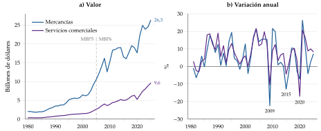
Fuente: OMC, conjuntos anuales de valores del comercio de mercancías y de comercio de servicios comerciales (servicios: MBP5 hasta 2004 y MBP6 desde 2005); 2025, estimación OMC-UNCTAD. Mercancías en base aduanera; dólares corrientes.
Qué servicios se comercian:
el primer sector son los otros servicios empresariales (consultoría, servicios jurídicos y contables, investigación y desarrollo, servicios técnicos), con el 24,5 % del total en 2025, seguidos de los viajes (19,9 %), el transporte (16,2 %) y las telecomunicaciones e informática (14,8 %) (gráfico 2);
desde 2005, las telecomunicaciones e informática han doblado su peso (del 7,1 al 14,8 %) y los otros servicios empresariales lo han aumentado en casi 5 puntos, mientras el transporte y los viajes, los servicios tradicionales, lo han perdido;
los servicios prestados digitalmente (los que se pueden prestar por redes informáticas: programación, consultoría, servicios financieros, audiovisuales) atraviesan esos sectores y son ya más de la mitad del comercio de servicios (5,3 billones de dólares, el 55 %, en 2025).
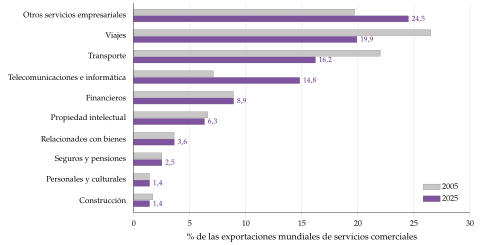
Fuente: OMC (WTO-UNCTAD-ITC), estadísticas anuales del comercio de servicios comerciales por sector (MBP6, clasificación EBOPS 2010); 2025, estimación. Sin los servicios no asignados (0,5 % en 2025).
Lo que no ven las estadísticas: la balanza de pagos registra como mercancía todo el valor de un bien, aunque buena parte sea diseño, programas, logística o servicio posventa. Es la servificación de las manufacturas:
medido en valor añadido (base TiVA de la OCDE y la OMC), los servicios son casi la mitad de lo que exporta el mundo, frente a la cuarta parte en términos brutos, y en España algo más [ver tema 4.A.22];
en las cadenas de valor, el valor se concentra en las fases anteriores a la fabricación (investigación, diseño, compras) y en las posteriores (marca, distribución, posventa), y menos en el montaje: es la curva de la sonrisa (gráfico 3), que describió Stan Shih, fundador de la empresa informática Acer, a principios de los 90 [ver tema 3.B.18].
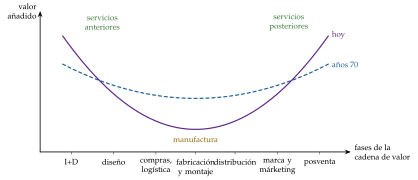
Fuente: elaboración propia a partir de R. Baldwin (2016).
Importancia cualitativa:
el AGCS fue el primer conjunto de reglas multilaterales para los servicios: antes solo había acuerdos sectoriales (transporte aéreo, telecomunicaciones) fuera del GATT;
los servicios son insumos de todo lo demás: telecomunicaciones, transporte, logística, finanzas y servicios a empresas condicionan la productividad de la industria, de modo que abrirlos beneficia también a quien los usa;
los intereses están repartidos: los países desarrollados tienen intereses ofensivos (abrir mercados fuera) en casi todos los sectores; los países en desarrollo tienen sobre todo intereses defensivos, salvo en el modo 4, en el turismo y en los servicios a distancia (la India en programación y servicios a empresas).
I.2. Motivación económica: las barreras regulatorias
Las ganancias del comercio valen también para los servicios: la ventaja comparativa (Ricardo; Heckscher, Ohlin y Samuelson) [ver tema 3.B.5], las economías de escala y la variedad [ver tema 3.B.6], y la reasignación hacia las empresas más productivas de Melitz (2003).
Lo que cambia es la barrera: un servicio rara vez se para en una aduana. Lo frenan regulaciones, que son de 2 tipos:
discriminatorias: solo afectan al extranjero (un límite al capital extranjero en un banco, la exigencia de nacionalidad para ejercer una profesión);
no discriminatorias, pero heterogéneas: se aplican a todos, pero cada país tiene las suyas (licencias, títulos, requisitos técnicos), y el que vende en 10 países tiene que cumplir 10 veces.
Ambas tienen algo en común: se pagan una vez por mercado, como un coste fijo. El modelo que sigue lleva esa idea al marco de empresas heterogéneas.
I.2.1. Los modos de suministro con costes fijos regulatorios
La pregunta: una empresa de servicios que quiere vender fuera elige, como una manufacturera, entre exportar y abrir una filial: es la disyuntiva entre proximidad y concentración (proximity-concentration trade-off) de Helpman, Melitz y Yeaple (2004) [ver tema 3.B.18]. En los servicios, exportar es el modo 1 y abrir una filial, el modo 3; la proximidad pesa mucho más, porque muchos servicios no se pueden prestar a distancia, y las barreras regulatorias son costes fijos de cada modo.
El resultado: si establecerse cuesta bastante más que prestar el servicio a distancia, las empresas se ordenan por productividad:
las menos productivas solo venden en su país;
las intermedias prestan el servicio desde casa (modo 1): pagan el coste fijo menor y aceptan el sobrecoste de la distancia en cada unidad;
las más productivas se establecen (modo 3): venden tanto que les compensa pagar el coste fijo mayor para ahorrarse la distancia.
El efecto de liberalizar: un compromiso de acceso a los mercados en el modo 3 abarata establecerse, y más empresas lo hacen (algunas dejan el modo 1); un acuerdo de reconocimiento de títulos abarata los 2 modos a la vez. El modelo, con sus supuestos, sus umbrales y su gráfico, está en el anexo A.
Lo que implica para un acuerdo:
las barreras de los servicios actúan sobre el margen extensivo: deciden cuántas empresas venden fuera, más que cuánto vende cada una, y por eso exportan servicios pocas empresas, grandes y productivas;
pesa tanto la heterogeneidad como la discriminación: aunque una regulación no discrimine, si es distinta en cada país obliga a pagar el coste fijo una y otra vez, y ahí está el valor del reconocimiento mutuo y de las disciplinas de reglamentación nacional (I.3);
el modo 3 domina porque la distancia pesa: un acuerdo de servicios que no cubriera la inversión dejaría fuera la mayor parte del comercio, y por eso el AGCS incluye la presencia comercial;
liberalizar no da ingresos arancelarios: la ganancia es un ahorro de recursos (costes fijos que no hay que pagar), que llega también a las empresas que usan los servicios como insumos.
I.2.2. La evidencia: cuánto se restringe el comercio de servicios
El índice de restricción del comercio de servicios de la OCDE (STRI; gráfico 4) mide de 0 a 1 las restricciones de 22 sectores en 51 países: los más cerrados son el transporte aéreo, los servicios jurídicos, la contabilidad y los de mensajería; la media se mueve poco desde 2014. Las restricciones que mide reducen tanto las importaciones como las exportaciones de servicios del país que las aplica, porque encarecen también los insumos de sus exportadores.
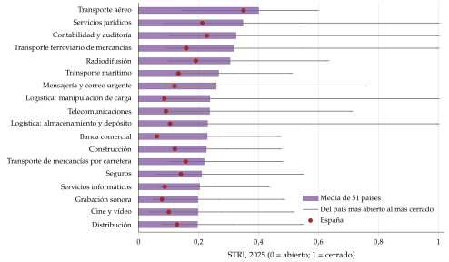
Fuente: OCDE, Services Trade Restrictiveness Index, 2025 (regulación vigente el 31 de diciembre de 2025), 18 de los 22 sectores (los que publica la base de datos).
Los costes del comercio: estimados con modelos de gravedad, los costes de comerciar servicios son aproximadamente el doble que los de las mercancías, y la regulación explica buena parte de la diferencia.
Los exportadores de servicios: en el Reino Unido son pocos, más productivos y mayores que los que no exportan, como predice la teoría.
Los usuarios: en la República Checa, la apertura de los servicios a la inversión extranjera elevó la productividad de las manufacturas que los usaban.
El modo 4: liberalizarlo se parece a abrir el mercado de trabajo, y por eso choca con la política de inmigración y es el modo con menos compromisos [ver tema 3.B.18].
La valoración: la teoría explica por qué el AGCS tiene 4 modos, por qué incluye la inversión y por qué la regulación interna es el centro de la negociación. Pero la regulación no es solo una barrera: la mayoría persigue fines legítimos (proteger al consumidor, la estabilidad financiera, la calidad de una profesión). Por eso el AGCS no obliga a desregular, sino a regular de forma transparente y sin discriminar; es lo que vemos en su estructura.
I.3. Estructura del AGCS
El AGCS tiene 29 artículos en 6 partes y varios anexos: alcance y definiciones; obligaciones y disciplinas generales; compromisos específicos; liberalización progresiva; disposiciones institucionales, y disposiciones finales.
I.3.1. Alcance
Cubre todos los servicios de todos los sectores, con 2 excepciones:
los servicios prestados en ejercicio de facultades gubernamentales, que no se suministran en condiciones comerciales ni en competencia con otros proveedores (la justicia, la policía, la seguridad social pública);
los derechos de tráfico aéreo y los servicios directamente relacionados (anexo sobre transporte aéreo); solo entran la reparación de aeronaves, la venta de servicios de transporte aéreo y los sistemas de reserva informatizados.
Cubrir no es liberalizar: el acuerdo reconoce el derecho de los miembros a regular sus servicios. El sector audiovisual, por ejemplo, está cubierto, pero la UE no asumió compromisos en él y mantiene exenciones de la NMF, lo que se conoce como la «excepción cultural».1
Clasificación: los miembros listan sus compromisos con la lista de clasificación sectorial de los servicios del GATT (documento MTN.GNS/W/120, de 1991), con 12 sectores y unos 160 subsectores, basada en la clasificación central de productos de las Naciones Unidas.
I.3.2. Obligaciones y disciplinas generales
Se aplican a todos los servicios cubiertos, haya o no compromisos, salvo las que el propio artículo limita a los sectores comprometidos:
Nación más favorecida (artículo II): cada miembro da, «inmediata e incondicionalmente», a los servicios y proveedores de todos los demás un trato no menos favorable que el que dé a los de cualquier otro país. El propio artículo admite 2 salvedades:
las exenciones del anexo sobre el artículo II, que cada miembro pudo listar al entrar en vigor el acuerdo: en principio no deben pasar de 10 años, el Consejo del Comercio de Servicios revisa las de más de 5 y todas se negocian en las rondas siguientes, aunque muchas siguen vigentes. Desde 1995, una exención nueva solo se consigue al adherirse o por la vía de las exenciones (waivers) del Acuerdo de Marrakech;
las ventajas que se den a los países vecinos para los servicios que se producen y consumen en las zonas fronterizas contiguas.
Transparencia (artículo III): publicar toda medida que afecte al comercio de servicios y notificar los cambios al Consejo del Comercio de Servicios.
Mayor participación de los países en desarrollo (artículo IV): los demás negocian compromisos que refuercen la capacidad de sus servicios, les den acceso a la tecnología, a los canales de distribución y a las redes de información, y abran los sectores y modos que les interesan.
Reglamentación nacional (artículo VI): en los sectores con compromisos, las medidas de aplicación general se administran de forma razonable, objetiva e imparcial, con tribunales o procedimientos para revisar las decisiones administrativas, y los requisitos de títulos, licencias y normas técnicas no deben ser más gravosos de lo necesario para asegurar la calidad del servicio. El artículo VI.4 encargó negociar disciplinas sobre esos requisitos (I.4).
Reconocimiento (artículo VII): un miembro puede reconocer los títulos o licencias de otro, pero debe dar a los demás la oportunidad de negociar un reconocimiento equivalente.
Monopolios y proveedores exclusivos (artículo VIII): se permiten, pero el miembro debe asegurarse de que no incumplan la NMF ni sus compromisos y de que no abusen de su posición cuando compitan fuera de su monopolio.
Prácticas comerciales (artículo IX): las que restringen la competencia no se prohíben; el acuerdo solo obliga a celebrar consultas, a petición de otro miembro, para eliminarlas.
Pagos y transferencias (artículo XI): no se restringen los pagos ni las transferencias corrientes de los servicios comprometidos, salvo por balanza de pagos, sin perjuicio de los derechos del Convenio Constitutivo del Fondo Monetario Internacional.
I.3.3. Las excepciones
Cuándo se puede incumplir: el AGCS permite apartarse de sus obligaciones, incluidos la NMF y los compromisos específicos, en 6 casos:
Integración económica (artículo V): los acuerdos regionales de servicios son la versión del artículo XXIV del GATT para los servicios [ver tema 3.B.35], con 4 condiciones:
tener una cobertura sectorial sustancial, medida por el número de sectores, el volumen de comercio afectado y los modos de suministro, sin excluir de antemano ninguno;
eliminar en lo esencial la discriminación entre las partes, en el sentido del trato nacional, al entrar en vigor o en un plazo razonable;
no elevar, frente a los demás miembros, el nivel global de obstáculos en cada sector;
notificarse al Consejo del Comercio de Servicios.
Si participan países en desarrollo, hay flexibilidad en estas condiciones; y el artículo V bis admite además los acuerdos de integración de los mercados de trabajo, como el de la UE.
Balanza de pagos (artículo XII): ante graves dificultades financieras exteriores, un miembro puede restringir el comercio de los servicios comprometidos, con 5 condiciones:
no discriminar entre los miembros;
ser compatible con el Convenio Constitutivo del Fondo Monetario Internacional;
no lesionar innecesariamente los intereses de los demás miembros;
no exceder de lo necesario;
ser temporal y eliminarse a medida que mejore la situación.
Las restricciones se notifican y se examinan en el Comité de Restricciones por Balanza de Pagos, que acepta el diagnóstico del Fondo.
Excepciones generales (artículo XIV): medidas necesarias para:
proteger la moral o mantener el orden público (este, solo ante una amenaza verdadera y suficientemente grave para un interés fundamental de la sociedad);
proteger la vida y la salud de las personas y de los animales o preservar los vegetales;
hacer cumplir leyes compatibles con el acuerdo, como las que previenen el fraude, protegen la intimidad y los datos personales o garantizan la seguridad;
recaudar de forma equitativa o efectiva los impuestos directos (excepción al trato nacional) y aplicar los convenios para evitar la doble imposición (excepción a la NMF).
Como en el artículo XX del GATT, las medidas no pueden ser una discriminación arbitraria o injustificable ni una restricción encubierta del comercio. A diferencia del GATT, no hay una excepción expresa para los recursos naturales agotables: el medio ambiente solo entra por la vida y la salud.2
Seguridad (artículo XIV bis): ningún miembro está obligado a dar información contraria a sus intereses esenciales de seguridad, ni se le impide protegerlos (servicios para abastecer a las fuerzas armadas, materiales fisionables, guerra o grave tensión internacional) o cumplir la Carta de las Naciones Unidas; debe informar al Consejo del Comercio de Servicios.
Medidas cautelares en los servicios financieros (anexo): para proteger a inversores, depositantes y asegurados o la integridad y estabilidad del sistema financiero, aunque contradigan el acuerdo.
Exenciones (waivers, artículo IX.3 del Acuerdo de Marrakech): en circunstancias excepcionales, la Conferencia Ministerial puede eximir a un miembro de una obligación (por 3 cuartos de los miembros, si no hay consenso), con un examen anual si dura más de un año. Así se aprobó en 2011 la exención para los servicios de los países menos adelantados (I.4).
El trato especial y diferenciado: en servicios no hay una cláusula de habilitación como la de las mercancías; el trato especial a los países en desarrollo va por el artículo IV, la flexibilidad del artículo V y la de las listas (artículo XIX.2), que les deja abrir menos sectores y menos tipos de transacciones.
Lo que quedó por negociar (el «programa incorporado»):
las salvaguardias urgentes (artículo X), que debían estar en 3 años; mientras tanto, solo se permitió hasta 1998 retirar un compromiso al año de asumirlo, en vez de a los 3;
las subvenciones (artículo XV): el miembro perjudicado solo puede pedir consultas;
la contratación pública de servicios (artículo XIII): la NMF, el acceso a los mercados y el trato nacional no se aplican a las compras para fines oficiales.
En los 3 sigue sin haber disciplinas.
I.3.4. Compromisos específicos: acceso a los mercados y trato nacional
Solo obligan en los sectores que cada miembro inscribe en su lista de compromisos específicos, y para cada sector y modo:
Acceso a los mercados (artículo XVI): el miembro no mantiene ninguna de las 6 limitaciones del acuerdo, salvo las que anote: al número de proveedores, al valor de las transacciones o activos, al número de operaciones, al número de personas empleadas, al tipo de persona jurídica y a la participación del capital extranjero.
Trato nacional (artículo XVII): no tratar al proveedor extranjero peor que al nacional. El trato puede ser formalmente idéntico o distinto; lo que cuenta es que no altere las condiciones de competencia a favor del nacional. A diferencia del GATT, donde es una obligación general, en el AGCS se negocia sector a sector.
Compromisos adicionales (artículo XVIII): los que no son de acceso ni de trato nacional, como el Documento de Referencia de las telecomunicaciones.
El método es de lista positiva: solo se liberaliza lo que figura en la lista; dentro de cada sector listado, se enumeran las limitaciones. Los acuerdos regionales recientes usan a menudo listas negativas: se liberaliza todo salvo lo listado (tabla 1).
El grado de compromiso se anota en cada casilla: «ninguna» (sin limitaciones, compromiso pleno), «sin consolidar» (sin compromiso) o la limitación concreta. Los compromisos horizontales afectan a todos los sectores, sobre todo a los modos 3 y 4.
La modificación de las listas (artículo XXI): un compromiso se puede retirar o modificar a partir de los 3 años de su entrada en vigor, avisando con 3 meses y negociando compensaciones con los miembros afectados; si no hay acuerdo, decide un arbitraje.
| Lista | Qué se compromete | Dónde se usa |
|---|---|---|
| Positiva | Solo los sectores listados, con sus limitaciones | AGCS; acuerdos de la UE hasta los años 2010 |
| Negativa | Todo, salvo los sectores y medidas listados como reservas | Tratado de Libre Comercio de América del Norte y sus sucesores; Acuerdo Económico y Comercial Global UE-Canadá (CETA) |
| Mixta | Positiva para el acceso a los mercados y negativa para el trato nacional | Propuesta del Acuerdo sobre el Comercio de Servicios (TiSA), suspendido en 2016 |
Fuente: elaboración propia a partir de Comisión Europea, Services and investment in EU trade deals: using positive and negative lists (2016).
Una casilla de una lista, por ejemplo. En los servicios de contabilidad, un miembro podría anotar: modo 1, «sin consolidar»; modo 2, «ninguna»; modo 3, «participación extranjera de hasta el 49 %»; modo 4, «sin consolidar, salvo lo indicado en los compromisos horizontales». Significa que no se compromete a dejar entrar la contabilidad prestada a distancia, que deja libre la que sus residentes compren fuera, que admite filiales con mayoría local y que solo deja entrar a los profesionales de la lista horizontal (normalmente, directivos trasladados dentro de la empresa y visitantes de negocios).
I.3.5. Los anexos sectoriales
Servicios financieros: el anexo define el sector (seguros, banca, valores) y permite las medidas cautelares (prudential carve-out) aunque contradigan los compromisos. El Quinto Protocolo (1997, en vigor desde el 1 de marzo de 1999) recogió los compromisos de 70 miembros en 56 listas.
Telecomunicaciones: el anexo garantiza el acceso a las redes públicas a quien preste cualquier servicio comprometido. El Cuarto Protocolo (telecomunicaciones básicas, 1997, en vigor desde el 5 de febrero de 1998) abrió los antiguos monopolios públicos en 69 gobiernos, con más del 91 % de los ingresos mundiales del sector; hoy 107 miembros han asumido el Documento de Referencia, que obliga a tener un regulador independiente, a garantizar la interconexión y a impedir las prácticas anticompetitivas del operador dominante [ver tema 4.A.12].
Movimiento de personas físicas: el acuerdo no cubre a quien busca empleo, la ciudadanía ni la residencia permanente.
Transporte aéreo y marítimo: los derechos de tráfico aéreo quedan fuera, y las negociaciones del transporte marítimo se suspendieron en 1996 sin resultado.
I.4. Evolución de las negociaciones
Ronda Uruguay (1986-1994): se acordó el marco y las primeras listas, que en su mayoría consolidaron la apertura que ya existía. En los modos 3 y 4 se usaron compromisos horizontales; en el modo 4, casi solo para directivos trasladados dentro de la empresa y viajes de negocios.
Las negociaciones sectoriales de 1997: telecomunicaciones básicas (Cuarto Protocolo) y servicios financieros (Quinto Protocolo), los mayores avances del AGCS.
La Ronda de Doha: las negociaciones de servicios empezaron en 2000, como mandaba el artículo XIX, y se integraron en la ronda en 2001:
el método fue el de peticiones y ofertas bilaterales; en Hong Kong (2005) se añadieron peticiones plurilaterales, y en julio de 2008 hubo una conferencia de «señales» de lo que cada uno estaba dispuesto a ofrecer, que no se plasmó en listas;
los países desarrollados pedían abrir telecomunicaciones, finanzas, energía y distribución; los países en desarrollo, el modo 4 también para trabajadores menos cualificados. La negociación quedó atada a la agrícola y se paró con ella;
además del acceso a los mercados, la ronda debía cerrar el programa incorporado, con posturas enfrentadas:
salvaguardias: muchos países en desarrollo piden un mecanismo como el de las mercancías; los desarrollados temen que sirva de proteccionismo encubierto y dudan de que se pueda medir un aumento repentino de las importaciones de servicios;
subvenciones: ni siquiera hay acuerdo sobre qué es una subvención a un servicio (los países en desarrollo citan los rescates bancarios), y el intercambio de información avanza poco;
contratación pública: la UE quería abrir las compras públicas de servicios, y la mayoría de los países en desarrollo se oponen porque las usan en su política de desarrollo;
reglamentación nacional: el grupo de trabajo creado en 1999 discutió las pruebas de necesidad (si una regulación es la menos restrictiva para el comercio que logra su fin), que muchos países en desarrollo veían como una amenaza a su derecho a regular.
La exención para los países menos adelantados: en 2011 se permitió dar trato preferente a sus servicios y proveedores sin extenderlo a los demás; se puso en marcha en Bali (2013) y Nairobi (2015) la prorrogó hasta finales de 2030. Más de 50 miembros han notificado preferencias, aunque con preferencias en buena parte ya existentes.
Lo que quedó fuera: el anexo sobre transporte aéreo manda revisar al menos cada 5 años si se amplía su cobertura, sin que se haya ampliado; y las normas laborales quedaron fuera de la OMC en la Conferencia Ministerial de Singapur (1996), que remitió a la Organización Internacional del Trabajo.
El Acuerdo sobre el Comercio de Servicios (TiSA): ante el bloqueo, 23 partes (50 países, con la UE) negociaron desde 2013, fuera de la OMC, un acuerdo plurilateral con lista mixta; se suspendió en noviembre de 2016 y no se ha retomado.
La reglamentación nacional de los servicios: en diciembre de 2021, 67 miembros que hacen casi el 90 % del comercio mundial de servicios cerraron, como iniciativa conjunta, un Documento de Referencia sobre la Reglamentación Nacional en el ámbito de los Servicios: procedimientos de autorización claros, plazos razonables, tasas proporcionadas y criterios objetivos, sin discriminar entre hombres y mujeres. Cada participante lo incorpora a su lista como compromiso adicional, lo que no exige consenso, y lo extiende a todos por la NMF. Está en vigor desde febrero de 2024; hoy tiene 73 participantes, rige para 57 y otros 6 ya han certificado sus listas. La OCDE y la OMC estimaron que reduciría los costes del comercio de servicios en unos 150.000 millones de dólares al año.
I.5. Valoración y perspectivas
Lo positivo:
es un acuerdo ambicioso en el alcance (todos los servicios y todos los modos) y flexible, porque cada miembro decide qué y cuánto abre;
da transparencia y seguridad jurídica: los compromisos consolidados no se pueden revertir sin compensar, y los incumplimientos van al sistema de solución de diferencias;
ha dado casos que fijan su interpretación, como Estados Unidos — Juegos de azar (DS285, 2005), donde una prohibición total de un servicio comprometido se consideró una limitación cuantitativa al acceso a los mercados.
Lo negativo:
poca liberalización efectiva: las listas consolidan, en promedio, menos de lo que los países ya aplican, muchos guardan restricciones que ya no aplican como baza para negociar, y el modo 4 sigue casi cerrado;
complejo: las listas, sector a sector y modo a modo, son difíciles de negociar y de leer, sobre todo para los países en desarrollo;
el problema del polizón: como lo que se abre se extiende por la NMF, cada país prefiere esperar a que abran los demás, el mismo dilema del prisionero de las rondas arancelarias [ver tema 3.B.33];
incompleto: siguen sin disciplinas las salvaguardias, las subvenciones y la contratación pública de servicios;
atado a la agricultura: con la Ronda de Doha parada, la liberalización de servicios se ha ido a los acuerdos regionales, que suelen ir más allá del AGCS [ver tema 3.B.35].
Perspectivas: el futuro pasa por las iniciativas plurilaterales abiertas (reglamentación nacional, comercio electrónico), por actualizar las listas para los servicios digitales y por la relación entre comercio y datos (III.2).
Recapitulación del bloque I: el AGCS hizo visible lo invisible: puso en una lista, sector a sector y modo a modo, lo que cada país está dispuesto a abrir. Pasamos al otro gran acuerdo de la Ronda Uruguay, el de las ideas.
II. El Acuerdo sobre los ADPIC
Nexo: una vez visto el comercio de servicios, pasamos a la otra gran novedad de la Ronda Uruguay, la propiedad intelectual.
Conclusión anticipada: el ADPIC es distinto de los demás acuerdos de la OMC: no obliga a abrir, sino a proteger, con unos mínimos comunes y un juez. La teoría explica por qué una protección negociada puede mejorar el bienestar mundial, pero también por qué reparte mal sus ganancias entre el Norte y el Sur; esa tensión explica sus flexibilidades y la batalla de la salud pública.
II.1. Delimitación e importancia de la propiedad intelectual
Qué es: los derechos de propiedad intelectual dan a los creadores el derecho exclusivo a usar su creación durante un tiempo. Se dividen en derechos de autor y derechos conexos (obras literarias y artísticas, programas informáticos, interpretaciones, grabaciones) y propiedad industrial (patentes, marcas, dibujos y modelos industriales, indicaciones geográficas, secretos comerciales).
Su objetivo, según el propio acuerdo (artículo 7): contribuir a la innovación y a la transferencia y difusión de la tecnología, en beneficio mutuo de productores y usuarios, de forma que favorezca el bienestar social y económico.
Su importancia en el comercio:
las ideas son una parte creciente del valor de lo que se comercia: los medicamentos, los programas, los aparatos electrónicos o las obras audiovisuales valen sobre todo por lo que incorporan de conocimiento;
en la UE, los sectores intensivos en derechos de propiedad intelectual generaban el 47 % del PIB y casi el 30 % del empleo directo en 2017-2019;
los cobros mundiales por el uso de la propiedad intelectual (cánones y licencias) fueron de 607.000 millones de dólares en 2025, el 6 % de los servicios comerciales, muy concentrados: Estados Unidos, la UE (con Irlanda y los Países Bajos, por las filiales de las multinacionales), Japón y Suiza son receptores netos, y casi todos los demás, pagadores netos (gráfico 5);
las falsificaciones y mercancías pirateadas suponían en torno al 2,3 % del comercio mundial de mercancías en 2021 y el 4,7 % de las importaciones de la UE.
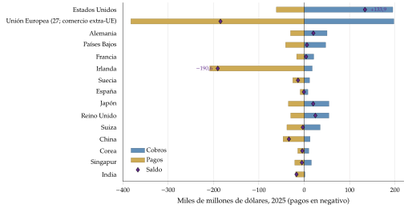
Fuente: OMC (WTO-UNCTAD-ITC), cargos por el uso de la propiedad intelectual (MBP6), cotejados con el Banco Mundial (WDI). La UE, solo su comercio con terceros países; el saldo de Irlanda refleja las filiales de multinacionales estadounidenses.
Qué aporta llevar la propiedad intelectual a la OMC: hasta 1995, la protección internacional dependía de convenios de la Organización Mundial de la Propiedad Intelectual (OMPI) que fijaban pocas obligaciones mínimas y no tenían un juez eficaz. El ADPIC fija mínimos para todos los miembros, obliga a que se hagan cumplir y somete el acuerdo a la solución de diferencias, con la posibilidad de represalias cruzadas (III.3).
II.2. Motivación económica: la protección entre el Norte y el Sur
Las ideas son un bien no rival: usarlas no las gasta, y copiarlas cuesta poco. Sin protección, quien no ha pagado el coste fijo de inventar puede imitar, y nadie invertiría en inventar: es la base del crecimiento con ideas de Romer (1990)3 [ver tema 3.A.44].
Pero la protección tiene un coste: da un monopolio temporal, con precios por encima del coste marginal y una pérdida irrecuperable de eficiencia. Nordhaus (1969)4 planteó la duración óptima de la patente como el equilibrio entre ambos efectos: más protección da más inventos, pero cada invento cuesta más a los consumidores durante más tiempo [ver tema 4.A.7].
En una economía abierta, la pregunta cambia: los inventos los hace sobre todo el Norte, pero los consumen todos. ¿Cuánto protege cada país si decide solo, y qué cambia un acuerdo como el ADPIC? Es el modelo de Grossman y Lai (2004).
II.2.1. La protección de la propiedad intelectual en una economía mundial
La pregunta: la protección de un país premia a los inventores de todo el mundo, pero sus consumidores pagan solo por la suya. Si cada país decide solo, el Sur, que apenas inventa, se aprovecha de la protección del Norte: es un problema de polizón, como el de los bienes públicos [ver tema 3.A.23]. Grossman y Lai (2004) lo estudian como un juego entre los 2 países.
Los 3 resultados:
sin acuerdo, el mundo protege demasiado poco: cada país no tiene en cuenta lo que su protección aporta a los consumidores de los demás;
el Norte protege más que el Sur: para el país que innova y tiene un mercado grande, la protección solo cuesta la pérdida de eficiencia del monopolio, porque el beneficio del inventor se queda en casa; para el Sur cuesta además lo que paga a los inventores extranjeros. La protección débil del Sur no es un error, sino su interés nacional;
la eficiencia no exige armonizar: lo que importa es el mercado protegido en todo el mundo, no cómo se reparte entre países; unos mínimos iguales para todos, como los del ADPIC, son una forma de llegar al óptimo, y la más cara para el Sur.
Lo que implica para el acuerdo: el ADPIC solo fue aceptable en un paquete, en el que el Sur aceptó perder en propiedad intelectual a cambio de ganar en agricultura y textiles; y por eso reclama flexibilidades, como las de la salud pública (II.4). El modelo, con un ejemplo numérico y su gráfico, está en el anexo B.
Los matices:
en el tiempo, endurecer la protección en el Sur frena la imitación, que es la forma en que la producción pasa al Sur, y el Norte también puede perder a largo plazo;
si la tecnología llega al Sur por la inversión de las multinacionales y no por imitación, más protección atrae más inversión;
más protección no siempre es más innovación: un monopolio más largo puede frenar a los innovadores siguientes, que construyen sobre las ideas anteriores.
La evidencia:
la armonización de patentes transfirió rentas sobre todo hacia Estados Unidos, desde casi todos los demás países, en especial los países en desarrollo;
tras las reformas de las patentes en 16 países, las multinacionales estadounidenses cobraron más regalías de sus filiales en ellos y les dedicaron más gasto en investigación;
tras el ADPIC aumentó la inversión en medicamentos para las enfermedades de los países ricos, pero no en las que afectan sobre todo a los pobres.
La valoración: el ADPIC corrigió una protección mundial demasiado baja, pero lo hizo de la forma que más pagaba el Sur. La protección no es un solo número: importan también las excepciones, las licencias obligatorias y el agotamiento, que son justo los márgenes que el Sur ha reclamado. Con esta lógica, veamos qué dice el acuerdo.
II.3. Estructura del ADPIC
El ADPIC tiene 73 artículos en 7 partes: disposiciones generales y principios; normas sobre la existencia, el alcance y el ejercicio de los derechos; observancia; adquisición y mantenimiento; prevención y solución de diferencias; disposiciones transitorias, y disposiciones institucionales y finales.
II.3.1. Principios
Protección mínima (artículos 1, 2 y 9): cada miembro puede proteger más, pero no menos; incorpora las disposiciones sustantivas de los convenios de París (1883, propiedad industrial) y de Berna (1886, derechos de autor), salvo los derechos morales, y no rebaja lo que esos convenios ya exigían.
Trato nacional (artículo 3): cada miembro protege a los nacionales de los demás como a los suyos, con las excepciones que ya admitían los convenios de la OMPI (París, Berna, Roma y el de los circuitos integrados); para los artistas, los productores de fonogramas y los organismos de radiodifusión, solo respecto de los derechos del propio acuerdo.
Nación más favorecida (artículo 4): toda ventaja que se dé a los nacionales de un país se extiende de inmediato y sin condiciones a los de todos los miembros, por primera vez en un acuerdo de propiedad intelectual. Quedan exentas las ventajas de los acuerdos generales de asistencia judicial, las que Berna y Roma permiten dar por reciprocidad, los derechos conexos que el acuerdo no prevé y los acuerdos de propiedad intelectual anteriores a 1995 notificados al Consejo de los ADPIC, si no discriminan de forma arbitraria.
Procedimientos de la OMPI (artículo 5): ni el trato nacional ni la NMF se aplican a los procedimientos para obtener los derechos de los tratados de la OMPI, como el Tratado de Cooperación en materia de Patentes.
Agotamiento (artículo 6): el acuerdo no se puede invocar en una diferencia sobre el agotamiento (salvo para exigir trato nacional y NMF), de modo que cada miembro decide si el derecho se agota con la primera venta en su territorio o en cualquier parte del mundo; es decir, si permite las importaciones paralelas (comprar fuera un producto legítimo, más barato, y revenderlo sin permiso del titular). La Declaración de Doha de 2001 lo confirmó.
Protección equilibrada (artículos 7 y 8): la protección debe equilibrar los incentivos a innovar con el acceso de los usuarios y la difusión de la tecnología; los miembros pueden adoptar medidas para proteger la salud pública y la nutrición y para evitar el abuso de los derechos o las prácticas que limiten de forma injustificable el comercio o la transferencia de tecnología.
II.3.2. Los derechos protegidos
El acuerdo cubre 7 derechos y fija para cada uno qué se protege y durante cuánto tiempo como mínimo (tabla 2).
| Derecho | Qué protege | Plazo mínimo |
|---|---|---|
| Patentes (27-34) | Invenciones nuevas, con actividad inventiva y aplicación industrial, de productos y procedimientos en todos los campos de la tecnología | 20 años desde la solicitud |
| Derecho de autor (9-14) | Obras literarias y artísticas, también los programas de ordenador y las bases de datos; derechos conexos de artistas, productores y organismos de radiodifusión | 50 años (desde la muerte del autor o la publicación); 20 para la radiodifusión |
| Marcas (15-21) | Signos que distinguen los productos o servicios de una empresa | 7 años, renovables sin límite |
| Indicaciones geográficas (22-24) | Nombres que indican que un producto tiene calidades debidas a su origen; protección reforzada para vinos y bebidas espirituosas | Sin plazo |
| Dibujos y modelos industriales (25-26) | Apariencia de un producto, nueva u original | 10 años |
| Esquemas de trazado (35-38) | Diseño de los circuitos integrados | 10 años |
| Información no divulgada (39) | Secretos comerciales y datos de las pruebas de medicamentos y productos agroquímicos | Mientras sea secreta |
Fuente: elaboración propia a partir del Acuerdo sobre los ADPIC (entre paréntesis, los artículos).
Las patentes, el derecho más disputado:
se pueden excluir los inventos contrarios al orden público o la moral, los métodos de diagnóstico, terapéuticos y quirúrgicos, y las plantas y animales (no los microorganismos) y los procedimientos esencialmente biológicos para producirlos; las variedades vegetales se protegen con patentes o con un sistema propio, como el de la Unión Internacional para la Protección de las Obtenciones Vegetales;
excepciones limitadas (artículo 30), como la excepción Bolar: un fabricante de genéricos puede usar el invento para preparar la autorización sanitaria antes de que expire la patente y entrar en el mercado el primer día;5
Las indicaciones geográficas: los vinos y bebidas espirituosas tienen una protección reforzada (artículo 23): no se puede usar «Rioja» ni «tipo Rioja» para un vino de otro origen, aunque no engañe; los demás productos solo se protegen si el uso induce a error.6
II.3.3. Excepciones y flexibilidades
La regla de los 3 pasos: cada derecho admite excepciones limitadas, con una fórmula parecida:
en el derecho de autor (artículo 13), solo en determinados casos especiales que no atenten contra la explotación normal de la obra ni causen un perjuicio injustificado al titular;
en las marcas (artículo 17), excepciones limitadas, como el uso leal de términos descriptivos, que tengan en cuenta los intereses del titular y de terceros;
en los dibujos y modelos (artículo 26.2) y en las patentes (artículo 30), excepciones limitadas que no atenten de forma injustificable contra la explotación normal ni perjudiquen injustificadamente al titular, teniendo en cuenta a los terceros; de aquí sale la excepción Bolar.
Las licencias obligatorias y el uso por el gobierno (artículo 31): el gobierno puede autorizar a un tercero a usar una patente, o usarla él mismo, sin el consentimiento del titular, con condiciones:
negociar antes una licencia voluntaria en condiciones razonables, salvo en una emergencia nacional, en casos de extrema urgencia o para un uso público no comercial;
que la licencia no sea exclusiva y se limite a su fin;
destinar la producción principalmente al mercado interno (artículo 31.f);
pagar una remuneración adecuada según el valor económico de la licencia (artículo 31.h);
que la decisión se pueda recurrir ante un juez o una autoridad independiente.
Si la licencia corrige una práctica declarada anticompetitiva, algunas condiciones se relajan.
El control de las prácticas anticompetitivas en las licencias (artículo 40): los miembros pueden impedir las cláusulas de las licencias que restrinjan la competencia o frenen la transferencia de tecnología, y consultar con el país de la empresa afectada.
La seguridad (artículo 73): como en el GATT y en el AGCS, nada obliga a dar información contraria a los intereses esenciales de seguridad ni impide protegerlos (materiales fisionables, armas, guerra o grave tensión internacional) o cumplir la Carta de las Naciones Unidas.
II.3.4. Observancia y transición
Observancia: tan importante como tener derechos es poder hacerlos valer. El acuerdo obliga a ofrecer:
procedimientos civiles y administrativos justos, con indemnizaciones y medidas provisionales;
medidas en frontera: el titular puede pedir a las aduanas que retengan las mercancías sospechosas;
procedimientos penales, al menos para la falsificación de marcas y la piratería a escala comercial.
Períodos de transición (artículos 65 y 66): 1 año para los países desarrollados (hasta 1996), 5 para los países en desarrollo (2000), con 5 más para las patentes de productos que antes no protegían, como los medicamentos (2005), y 10 años más para los países menos adelantados (2006), que el Consejo de los ADPIC prorroga a petición suya. La de estos se ha prorrogado varias veces: en general, hasta el 1 de julio de 2034, y para los productos farmacéuticos, hasta el 1 de enero de 2033.
Transferencia de tecnología y cooperación: los países desarrollados deben dar incentivos a sus empresas para transferir tecnología a los países menos adelantados (artículo 66.2) y prestar cooperación técnica y financiera a los países en desarrollo que la pidan (artículo 67). Los países en desarrollo se quejan de que estos compromisos se han cumplido poco.
II.4. Evolución de las negociaciones: de la OMPI a la salud pública
II.4.1. Antes y durante la Ronda Uruguay
La OMPI: el Convenio de Estocolmo de 1967 la creó (en vigor desde 1970), y desde 1974 es un organismo especializado de las Naciones Unidas que administra los convenios de París y de Berna. Sus convenios dejaban a cada país mucha libertad (muchos países en desarrollo no patentaban medicamentos) y no tenían un mecanismo eficaz para hacerlos cumplir.
El impulso de Estados Unidos: desde finales de los 70, su industria farmacéutica, informática y del entretenimiento presionó para llevar la propiedad intelectual al GATT; tras un intento fallido en la Ronda de Tokio contra las falsificaciones, el tema entró en el mandato de Punta del Este (1986). Desde 1988, Estados Unidos usó además la «sección 301 especial» de su ley de comercio para presionar uno a uno a los países con protección débil.
El resultado: el ADPIC (1994) unificó en un texto los distintos derechos, elevó los mínimos y los sometió a la solución de diferencias de la OMC. Es el acuerdo de la Ronda Uruguay que más cambió las leyes de los países en desarrollo.
II.4.2. La salud pública: de Doha a la COVID-19
El problema: el ADPIC obligó a patentar los medicamentos durante 20 años. A finales de los 90, el precio de los antirretrovirales contra el sida en África y el pleito de 39 farmacéuticas contra la ley sudafricana de medicamentos (retirado en 2001) lo convirtieron en un conflicto político.
La Declaración de Doha relativa al Acuerdo sobre los ADPIC y la salud pública (14 de noviembre de 2001):
el acuerdo «puede y deberá ser interpretado y aplicado de una manera que apoye el derecho de los Miembros de la OMC de proteger la salud pública y, en particular, de promover el acceso a los medicamentos para todos»;
cada miembro puede conceder licencias obligatorias, decidir sus motivos y determinar qué es una emergencia nacional, y elegir su régimen de agotamiento.
El problema del párrafo 6: una licencia obligatoria no sirve a un país sin industria farmacéutica, y el artículo 31.f impedía que otro país produjera para exportarle. La solución:
una exención temporal (decisión de 30 de agosto de 2003) permitió producir con licencia obligatoria para exportar a un país sin capacidad;
en 2005 se aprobó convertirla en una enmienda, el artículo 31 bis, la primera de un acuerdo de la OMC, que entró en vigor el 23 de enero de 2017, al aceptarla 2 tercios de los miembros (hoy, 142 de los 166). Se ha usado muy poco: la primera vez, para que Canadá exportara a Ruanda un antirretroviral en 2008.
La COVID-19: en octubre de 2020, la India y Sudáfrica propusieron suspender temporalmente las patentes, los secretos comerciales y otros derechos sobre vacunas, tratamientos y pruebas de la COVID-19. Estados Unidos apoyó en mayo de 2021 una exención limitada a las vacunas; la UE, Suiza y el Reino Unido se opusieron y propusieron aclarar el uso de las licencias obligatorias.
La decisión de la CM12 (Ginebra, 17 de junio de 2022):
permite a los países en desarrollo autorizar sin consentimiento del titular la producción de vacunas de la COVID-19, con cualquier instrumento de su derecho (decretos de urgencia, órdenes administrativas o judiciales) y sin negociar antes una licencia voluntaria;
deja exportar cualquier proporción de esa producción a otros países en desarrollo, sin el límite del artículo 31.f; la remuneración puede tener en cuenta el fin humanitario y sin ánimo de lucro, y la protección de los datos de prueba (artículo 39.3) no impide aprobar deprisa esas vacunas;
rige 5 años (hasta junio de 2027, prorrogables por el Consejo General); se animó a los países en desarrollo con capacidad de fabricar vacunas a comprometerse a no usarla, y China lo hizo.
La extensión a pruebas diagnósticas y tratamientos, que debía decidirse en 6 meses, no se acordó: el plazo venció en diciembre de 2022 y en 2024 se reconoció que no había consenso.
¿Habría servido suspender las patentes de las vacunas? Los partidarios recordaban que la protección de los inventos no puede pesar más que una pandemia y que la exención daba seguridad jurídica a los fabricantes del Sur. Los críticos señalaban que el cuello de botella no eran las patentes, sino la capacidad de producir: el saber hacer (know-how), los insumos escasos, las cadenas de suministro y la aprobación sanitaria; que la vacuna de ARN mensajero era muy difícil de copiar sin la colaboración del inventor, y que debilitar las patentes reduciría el incentivo a invertir en la próxima pandemia. Cuando se aprobó la decisión, en 2022, ya sobraban vacunas; ningún país la ha usado, como constató el Consejo de los ADPIC en julio de 2026. La lección es que la propiedad intelectual era solo uno de los obstáculos, y no el principal.
II.4.3. Las demás cuestiones abiertas
Indicaciones geográficas: el registro multilateral de vinos y bebidas espirituosas que manda el artículo 23.4 y la extensión de la protección reforzada a otros productos siguen sin acuerdo; la UE las protege en sus acuerdos bilaterales [ver tema 3.B.41].
Biodiversidad y conocimientos tradicionales: los países ricos en biodiversidad (la India, Brasil, los países africanos) piden que quien solicite una patente revele el origen de los recursos genéticos que usa, como prevé el Convenio sobre la Diversidad Biológica (1992). En la OMC no hay acuerdo, pero la OMPI aprobó en mayo de 2024 un tratado que exige esa divulgación.
Reclamaciones sin infracción: desde 1995, una moratoria impedía denunciar en el ADPIC medidas que, sin incumplirlo, anularan una ventaja esperada; expiró en la CM14 (Yaundé, 2026). Desde entonces se pueden presentar, aunque nadie lo ha hecho todavía [ver tema 3.B.33].
Fuera de la OMC: los países desarrollados han buscado más protección («ADPIC-plus») en acuerdos regionales, como el Tratado Integral y Progresista de Asociación Transpacífico, y en el Acuerdo Comercial de Lucha contra la Falsificación (ACTA), que el Parlamento Europeo rechazó el 4 de julio de 2012 y nunca entró en vigor.
II.5. Valoración y perspectivas
Lo positivo:
unificó en un solo texto los derechos que antes regían convenios distintos y menos exigentes;
les dio un juez: la protección se puede exigir en la OMC, con represalias si no se cumple;
ha mostrado flexibilidad: la Declaración de Doha, el artículo 31 bis y la decisión de la CM12 prueban que el equilibrio entre innovación y acceso se puede ajustar dentro del acuerdo.
Lo negativo:
es un acuerdo de mínimos para todos, que, como muestra el modelo, reparte mal las ganancias: el Sur paga una parte del incentivo a innovar que antes no pagaba;
es estático: los mínimos de 1994 no se han puesto al día con la economía digital, los datos o la inteligencia artificial;
su observancia es desigual: tener leyes no basta para hacerlas cumplir, como muestran las diferencias con China: la de Estados Unidos sobre la observancia (DS362, 2009) y las 2 de la UE sobre patentes: por las órdenes que impedían litigar fuera de China (DS611, resuelta en 2025 por el arbitraje de apelación provisional) y por la fijación de regalías mundiales de las patentes esenciales para normas técnicas (DS632, con grupo especial desde 2026) [ver tema 3.B.33].
Perspectivas: la propiedad intelectual se negocia hoy sobre todo en los acuerdos regionales y en la OMPI; en la OMC, la agenda es defensiva (salud, transferencia de tecnología) y, desde 2025, también la de la tecnología como arma geopolítica.
Recapitulación del bloque II: el ADPIC protege lo que no se ve, pero no gratis: alguien paga el incentivo a innovar, y el acuerdo decide quién. Pasamos a los acuerdos entre grupos de miembros, que hoy concentran la actividad negociadora.
III. Acuerdos plurilaterales y otros acuerdos
Nexo: tras los 2 acuerdos multilaterales, pasamos a los que solo obligan a quien los firma y a las nuevas iniciativas.
Conclusión anticipada: con el consenso bloqueado, la OMC avanza en lo nuevo por geometría variable: acuerdos plurilaterales como el de Contratación Pública e iniciativas conjuntas abiertas (comercio electrónico, facilitación de las inversiones, reglamentación nacional). Su límite es el polizón cuando se extienden por la NMF y el veto de un solo miembro cuando piden entrar en el anexo 4.
III.1. El Acuerdo sobre Contratación Pública
Qué es: la contratación pública queda fuera de las reglas generales del GATT (artículo III.8) y del AGCS (artículo XIII), de modo que un gobierno puede comprar solo a empresas nacionales. El Acuerdo sobre Contratación Pública (ACP), plurilateral del anexo 4, abre a la competencia de las partes las compras que cada una lista.
Su importancia: la contratación pública supone en torno al 12-13 % del PIB en los países de la OCDE y entre el 10 y el 15 % en el mundo, y el ACP abre a la competencia internacional compras por más de 1,7 billones de dólares al año.
Su historia:
el primer código se firmó en la Ronda de Tokio (1979, en vigor en 1981); el de la Ronda Uruguay, en 1994 (en vigor en 1996), amplió la cobertura a los servicios y a los gobiernos regionales y locales;
el ACP revisado, adoptado el 30 de marzo de 2012 y en vigor desde el 6 de abril de 2014, amplió la cobertura en unos 80.000-100.000 millones de dólares anuales, modernizó los procedimientos (contratación electrónica) y añadió medidas transitorias para los países en desarrollo que se adhieran.
Su contenido: trato nacional y no discriminación entre las partes, procedimientos de licitación transparentes y la posibilidad de recurrir ante un órgano nacional imparcial. Solo se aplica a las entidades (centrales, regionales, empresas públicas), los bienes, los servicios y los umbrales de valor que cada parte inscribe en su lista.
Sus partes: 22 partes, que cubren 49 miembros de la OMC (la UE y sus 27 Estados cuentan como una parte); las últimas adhesiones, Australia (2019), el Reino Unido como parte propia tras salir de la UE (2021) y Macedonia del Norte (2023) (gráfico 6). Negocian su adhesión 12 observadores, entre ellos China, Rusia, Kazajistán, Costa Rica, Jordania y Timor Oriental (el primer país menos adelantado); Brasil retiró su oferta en 2023.
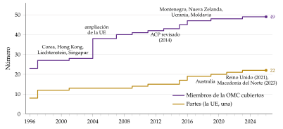
Fuente: OMC, «Parties, observers and accessions» del Acuerdo sobre Contratación Pública. La UE cuenta como una parte que cubre a sus Estados miembros; el Reino Unido, parte propia desde 2021.
III.1.1. La economía de la contratación pública: el sesgo nacional
La pregunta: los gobiernos compran mucho más a sus empresas nacionales que los particulares: es el sesgo nacional de la contratación pública. ¿Distorsiona el comercio? R. E. Baldwin (1970) dio una respuesta sorprendente: muchas veces, no.
El argumento: en un país pequeño que compra un bien homogéneo al precio mundial, todo depende de cuánto compre el gobierno:
si compra menos de lo que produce el país, los productores nacionales le venden a él y los particulares sustituyen con importaciones lo que ya no les venden: la producción, los precios y las importaciones no cambian, y la preferencia solo cambia quién compra a quién;
si compra más de lo que el país produce al precio mundial, tiene que pagar más para conseguirlo: sube la producción nacional, bajan las importaciones y el contribuyente paga un sobrecoste.
El modelo, con su gráfico, está en el anexo C.
Dónde muerde: en los bienes que también compran los particulares, la preferencia nacional suele ser inocua; muerde donde el gobierno es casi el único comprador: obras públicas, defensa, equipos ferroviarios, sanitarios o de telecomunicaciones. Ahí se concentran las ganancias de un acuerdo como el ACP, y ahí están las empresas españolas de ingeniería y construcción.
Los matices: con pocos licitadores, favorecer un poco a las empresas nacionales menos eficientes obliga a las extranjeras a pujar más bajo y puede abaratar las compras; con rendimientos crecientes, la preferencia puede atraer producción, como un arancel. La transparencia que exige el ACP importa a menudo más que la preferencia.
La evidencia: el sesgo nacional es grande; en la UE, pese a sus directivas de contratación, la probabilidad de que una empresa gane un contrato en otro Estado miembro es muy inferior a la de ganarlo en el suyo.
La valoración: el argumento explica por qué el ACP se centra en sectores concretos, en umbrales y en la transparencia de los procedimientos, y por qué muchos países en desarrollo, que usan las compras públicas como política industrial, no se adhieren.
III.2. Otros acuerdos e iniciativas
III.2.1. Inversión: las MIC y la facilitación de las inversiones
Medidas en materia de inversiones relacionadas con el comercio (MIC, o TRIMs): aunque está en el anexo 1A, su objeto es la inversión. Prohíbe imponer a las empresas, como condición para invertir o recibir una ventaja, medidas contrarias al trato nacional o a la prohibición de las restricciones cuantitativas del GATT (artículos III y XI). Su lista ilustrativa incluye las prescripciones de contenido local, de equilibrio entre importaciones y exportaciones y de restricción de divisas.
Las medidas existentes se notificaron y se eliminaron en 2 años (países desarrollados), 5 (países en desarrollo) o 7 (países menos adelantados).
Se ha usado contra las ayudas verdes con contenido local: Canadá — Energía renovable (2013) e India — Células solares (2016) [ver tema 3.B.31]; y China lo invocó contra los créditos fiscales de la ley estadounidense de reducción de la inflación (DS623), cuyo informe Estados Unidos apeló «al vacío» en 2026 [ver tema 3.B.33].
Facilitación de las Inversiones para el Desarrollo (IFD): la inversión, uno de los «temas de Singapur», salió de la agenda en 2004. Una iniciativa conjunta lanzada en 2017 cerró en 2023 un acuerdo que no toca la protección de las inversiones ni el arbitraje, sino los procedimientos: transparencia, autorizaciones ágiles, puntos de contacto y ayuda a los países en desarrollo.
Tiene 131 participantes, 94 de ellos países en desarrollo y 29 menos adelantados. Entrar en el anexo 4 exige consenso (artículo X.9 del Acuerdo de Marrakech): en Abu Dabi (2024) lo bloquearon la India, Sudáfrica y Turquía, y en Yaundé (2026), con el apoyo de 165 de los 166 miembros, siguió sin consenso. Sus participantes firmaron allí una declaración para seguir preparando su aplicación.
III.2.2. Tecnología de la información y comercio electrónico
El Acuerdo sobre Tecnología de la Información (ATI, o ITA): firmado en Singapur (1996) por 29 participantes, elimina los aranceles de ordenadores, semiconductores, equipos de telecomunicaciones y programas en soporte físico. Es un «cero por cero» que se aplica a todos por la NMF: hoy tiene 84 participantes, que hacen el 97 % del comercio mundial de estos productos.
En Nairobi (2015), 24 participantes, que representan a 53 miembros y el 90 % del comercio de esos productos, lo ampliaron a 201 productos más (semiconductores de nueva generación, equipos médicos, consolas, sistemas de navegación), con un comercio de más de 1,3 billones de dólares al año; los aranceles se eliminaron por etapas desde julio de 2016, en 5 años (7 en casos excepcionales).
La moratoria de las transmisiones electrónicas: desde 1998, los miembros no ponían aranceles a los programas, la música o las películas descargados. Expiró en la CM14 de Yaundé (marzo de 2026), por primera vez, por la oposición de algunos países en desarrollo, que temen perder recaudación y espacio para su política digital. Desde el 8 de mayo de 2026, 19 miembros, con Estados Unidos, no los imponen entre sí, pero en noviembre sigue sin haber moratoria multilateral [ver tema 3.B.33].
El Acuerdo sobre Comercio Electrónico: iniciativa conjunta lanzada en Buenos Aires (2017), con negociaciones desde 2019. En julio de 2024 se estabilizó un texto sobre firma y autenticación electrónicas, contratos y facturas electrónicas, comercio sin papel, protección del consumidor en línea, mensajes comerciales no solicitados, ciberseguridad, datos abiertos y la moratoria de aranceles entre las partes; dejó fuera, por falta de acuerdo, los flujos transfronterizos de datos y la localización de servidores. El texto se cerró en diciembre de 2024, y en Yaundé 66 miembros (hoy 68) acordaron aplicarlo provisionalmente entre sí: entrará en vigor 30 días después de la 45.ª aceptación, previsiblemente a mediados de 2027. La Comisión propuso en julio de 2026 que la UE lo acepte [ver tema 4.A.14].
Otras iniciativas y temas.
Micro, pequeñas y medianas empresas: un grupo de trabajo informal (desde 2017) que ha impulsado el Global Trade Helpdesk, una ventanilla única de información sobre aranceles, requisitos y oportunidades de todos los mercados, de la OMC, el Centro de Comercio Internacional y la UNCTAD.
Comercio y medio ambiente: no hay un acuerdo multilateral (el de subvenciones a la pesca es de mercancías) y el Acuerdo sobre Bienes Ambientales, que negociaron 46 miembros entre 2014 y 2016, quedó suspendido. Siguen los diálogos estructurados sobre comercio y sostenibilidad ambiental, la contaminación por plásticos y la reforma de las subvenciones a los combustibles fósiles [ver tema 3.B.31].
Comercio y competencia: fue otro de los temas de Singapur y salió de la agenda en 2004. Por eso no hay reglas multilaterales de competencia: la Organización de Países Exportadores de Petróleo, un cártel entre Estados, no incumple ninguna norma de la OMC [ver tema 4.A.15].
III.3. Transparencia y solución de diferencias
El Mecanismo de Examen de las Políticas Comerciales (anexo 3) es el otro acuerdo multilateral que no es de mercancías. No sirve para juzgar, sino para dar transparencia:
el Órgano de Examen de las Políticas Comerciales (el Consejo General con otro presidente) examina a cada miembro con un informe de su gobierno y otro de la Secretaría;
la frecuencia depende del peso en el comercio: cada 3 años las 4 primeras potencias comerciales (en el ciclo actual, la UE, Estados Unidos, China y el Reino Unido), cada 5 las 16 siguientes y cada 7 las demás, con más margen para los países menos adelantados. El último examen de la UE fue en abril de 2023, y el siguiente está convocado para el 8 y el 10 de diciembre de 2026;
desde 2009, la OMC publica además informes de vigilancia de las medidas comerciales del G-20 y del conjunto de los miembros [ver tema 3.B.33].
La solución de diferencias (anexo 2) es la misma para todos los acuerdos [ver tema 3.B.33], con 3 rasgos que importan para estos acuerdos:
Represalias cruzadas: si suspender concesiones en el mismo acuerdo no es eficaz, se pueden suspender en otro. Un país pequeño no presiona a uno grande subiendo aranceles, pero sí dejando de proteger sus patentes o sus derechos de autor: Ecuador (contra la UE, por los plátanos, 2000), Antigua y Barbuda (contra Estados Unidos, por los juegos de azar, 2007) y Brasil (contra Estados Unidos, por el algodón, 2009) fueron autorizados a suspender obligaciones del ADPIC;
Reclamaciones sin infracción: se admiten en el AGCS y, desde que expiró la moratoria en 2026, también en el ADPIC;
Arbitraje de apelación provisional: el bloqueo del Órgano de Apelación afecta igual a estos acuerdos, y el arbitraje entre los que lo aceptan ya ha resuelto una diferencia del ADPIC (DS611).
III.4. Situación actual
Los acuerdos multilaterales están congelados: ni el AGCS ni el ADPIC se han renegociado desde 1994, salvo el artículo 31 bis y la decisión de la CM12. En Yaundé (2026) no hubo resultados en servicios ni en propiedad intelectual, y expiraron las 2 moratorias [ver tema 3.B.33].
La actividad está en los plurilaterales: reglamentación nacional de los servicios (en vigor por las listas), comercio electrónico (en aplicación provisional entre quienes lo acepten) y facilitación de las inversiones (vetada en el anexo 4). Unos usan las listas y la NMF; otros piden entrar en el anexo 4, donde cualquier miembro puede vetarlos.
La reforma de la OMC: entre las 4 líneas de trabajo abiertas en junio de 2026, la de la toma de decisiones discute desde octubre las propuestas de China, la India y el Reino Unido sobre el lugar de los acuerdos plurilaterales.
La posición de la UE: es la principal defensora de las iniciativas conjuntas (forma parte de todas), del ACP y del arbitraje de apelación provisional, y propone que los plurilaterales abiertos puedan incorporarse al sistema sin que un solo miembro lo impida [ver tema 3.B.41].
Recapitulación del bloque III: la OMC avanza en lo nuevo entre los que quieren, y deja la puerta abierta a los demás. Es menos de lo que fue la Ronda Uruguay, pero más que nada.
Conclusión
Recapitulación: En conclusión, la Ronda Uruguay llevó a la OMC 2 comercios que no se ven: los servicios, cuyas barreras son regulaciones que actúan como costes fijos, y las ideas, que necesitan protección para que alguien invierta en ellas.
El AGCS los hizo visibles con 4 modos y listas de compromisos; el ADPIC fijó mínimos con juez, con un reparto de las ganancias que favorece al Norte y que las flexibilidades de la salud pública han ido corrigiendo.
Lo nuevo (compras públicas, comercio digital, inversiones) avanza en acuerdos plurilaterales.
Relevancia:
Para España, con una gran exportación de servicios, empresas de ingeniería y construcción que licitan fuera y productos con indicación geográfica, estos acuerdos importan tanto o más que los aranceles.
Extensiones:
La organización de la OMC y las mercancías [ver tema 3.B.33]; los acuerdos regionales «profundos» [ver tema 3.B.35]; la política comercial de la UE [ver tema 3.B.41]; las cadenas globales de valor [ver tema 3.B.18]; la innovación y el crecimiento [ver tema 3.A.44]; la I+D en España [ver tema 4.A.7] y la internacionalización de su economía [ver tema 4.A.22].
Opinión:
El valor de estos acuerdos está menos en lo que liberalizaron que en la transparencia que dieron. El camino realista es de geometría variable: plurilaterales abiertos a todos, con la NMF como regla, y una vía para incorporarlos sin veto.
Idea final:
Volvamos al refrán: ojos que no ven, corazón que no siente. Las barreras invisibles eran cómodas, porque nadie las veía; el gran logro de estos acuerdos fue ponerlas a la vista en listas y exámenes. Sí se pueden poner reglas comunes a lo que no se ve, siempre que antes se haga visible.
A. Anexo: los modos de suministro con costes fijos regulatorios
El modelo formal que, en el apartado I.2.1, se cuenta de palabra: la elección entre prestar un servicio a distancia (modo 1) y establecerse (modo 3) cuando las barreras son costes fijos regulatorios.
Notación. La de Melitz: \(\varphi\) es la productividad de la empresa, \(\sigma>1\) la elasticidad de sustitución entre variedades, \(w\) el salario, \(\tau>1\) el coste iceberg de prestar el servicio a distancia y \(F\) los costes fijos (de producir en casa, \(F^d\); de prestar desde casa, modo 1, \(F^{\mathrm{M1}}\); de establecerse, modo 3, \(F^{\mathrm{M3}}\)), con su parte regulatoria \(R\).
a) Idea
Una empresa de servicios que quiere vender fuera elige como una manufacturera entre exportar y abrir una filial: es la disyuntiva entre proximidad y concentración (proximity-concentration trade-off) de Helpman, Melitz y Yeaple (2004) [ver tema 3.B.18].
En los servicios, exportar es el modo 1 y abrir una filial es el modo 3; y la proximidad pesa mucho más, porque muchos servicios no se pueden prestar a distancia. Las barreras regulatorias son costes fijos de cada modo, y la liberalización consiste en reducirlos.
b) Modelo
i) Supuestos
Los del modelo de Melitz: competencia monopolística con preferencias de elasticidad de sustitución constante (\(\sigma>1\)), un solo factor, el trabajo, con salario \(w\), y empresas de productividad \(\varphi\) distinta [ver tema 3.B.6].
2 países iguales. Para vender en el otro, la empresa elige entre:
modo 1: presta el servicio desde casa, con un coste fijo \(wF^{\mathrm{M1}}=w\,(F^x+R^{\mathrm{M1}})\) y un coste iceberg \(\tau>1\) por unidad, que recoge la desventaja de prestarlo a distancia;
modo 3: se establece, sin coste iceberg, con un coste fijo \(wF^{\mathrm{M3}}=w\,(F^{\mathrm I}+R^{\mathrm{M3}})\) mayor.
\(R^{\mathrm{M1}}\) y \(R^{\mathrm{M3}}\) son la parte regulatoria de cada coste fijo: licencias, reconocimiento de títulos, autorizaciones y límites a la inversión.
ii) Desarrollo
Paso 1: las rectas del beneficio. Con margen constante, el beneficio de cada forma de vender es una recta en \(\varphi^{\sigma-1}\) (gráfico 7):
la del modo 1, \(B^{\mathrm{M1}}=\tau^{1-\sigma}\,\Omega\,\varphi^{\sigma-1}-wF^{\mathrm{M1}}\), empieza en \(-wF^{\mathrm{M1}}\) y es más plana, porque la distancia encarece cada unidad;
la del modo 3, \(B^{\mathrm{M3}}=\Omega\,\varphi^{\sigma-1}-wF^{\mathrm{M3}}\), empieza más abajo, pero tiene la pendiente del beneficio interior;
\(\Omega\) es el factor de demanda, común a las rectas.
Paso 2: los umbrales. Presta desde casa la empresa con \(B^{\mathrm{M1}}\geq0\), y se establece la que gana más así, \(B^{\mathrm{M3}}\geq B^{\mathrm{M1}}\). Si el coste fijo de establecerse es lo bastante alto, las empresas se ordenan por productividad:
\[F^{\mathrm{M3}}>\tau^{\sigma-1}F^{\mathrm{M1}}>F^d\quad\Longrightarrow\quad\varphi^*<\varphi^*_{\mathrm{M1}}<\varphi^*_{\mathrm{M3}}\tag{1}\]
Paso 3: la liberalización. Un compromiso de acceso a los mercados en el modo 3 reduce \(R^{\mathrm{M3}}\): la recta \(B^{\mathrm{M3}}\) sube, el umbral \(\varphi^*_{\mathrm{M3}}\) baja y más empresas se establecen; una parte de ellas dejan el modo 1. Un acuerdo de reconocimiento de títulos reduce \(R^{\mathrm{M1}}\) y \(R^{\mathrm{M3}}\) a la vez.
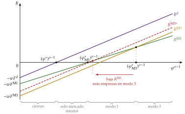
Los umbrales, paso a paso
El umbral del modo 1 cumple \(B^{\mathrm{M1}}(\varphi^*_{\mathrm{M1}})=0\): \((\varphi^*_{\mathrm{M1}})^{\sigma-1}=\tau^{\sigma-1}wF^{\mathrm{M1}}/\Omega\).
El del modo 3 cumple \(B^{\mathrm{M3}}=B^{\mathrm{M1}}\): \((\varphi^*_{\mathrm{M3}})^{\sigma-1}=w\,(F^{\mathrm{M3}}-F^{\mathrm{M1}})/[\Omega\,(1-\tau^{1-\sigma})]\).
Una rebaja de \(R^{\mathrm{M3}}\) reduce \(F^{\mathrm{M3}}-F^{\mathrm{M1}}\) y, con ello, \(\varphi^*_{\mathrm{M3}}\); una de \(R^{\mathrm{M1}}\) reduce \(\varphi^*_{\mathrm{M1}}\) y sube \(\varphi^*_{\mathrm{M3}}\) (algunas empresas pasan del modo 3 al 1). Cuanto mayor es \(\tau\), más se acercan las rectas del modo 1 al eje y más se usa el modo 3: si \(\tau\to\infty\) (un corte de pelo), solo hay modo 3 (o 2 y 4). ∎
iii) Implicaciones
Las barreras de los servicios actúan sobre el margen extensivo: deciden cuántas empresas venden fuera, más que cuánto vende cada una. Por eso exportan servicios pocas empresas, grandes y productivas.
Pesa tanto la heterogeneidad como la discriminación: aunque una regulación no discrimine, si es distinta en cada país obliga a pagar el coste fijo una y otra vez. Ahí está el valor del reconocimiento mutuo y de las disciplinas de reglamentación nacional (I.3).
El modo 3 domina porque la distancia pesa: un acuerdo de servicios que no cubriera la inversión dejaría fuera la mayor parte del comercio. Por eso el AGCS incluye la presencia comercial.
Liberalizar no da ingresos arancelarios: la ganancia es un ahorro de recursos (costes fijos que no hay que pagar), que llega también a las empresas que usan los servicios como insumos.
c) Extensiones
Costes del comercio: estimados con modelos de gravedad, los costes de comerciar servicios son aproximadamente el doble que los de las mercancías, y la regulación explica buena parte de la diferencia.
El modo 4 como migración temporal: liberalizarlo se parece a abrir el mercado de trabajo, y por eso choca con la política de inmigración [ver tema 3.B.18].
d) Evidencia empírica
El índice de restricción del comercio de servicios de la OCDE (STRI; gráfico 4) mide de 0 a 1 las restricciones de 22 sectores en 51 países: los más cerrados son el transporte aéreo, los servicios jurídicos, la contabilidad y los de mensajería; la media se mueve poco desde 2014. Las restricciones que mide reducen tanto las importaciones como las exportaciones de servicios del país que las aplica, porque encarecen también los insumos de sus exportadores.
Los exportadores de servicios son pocos y grandes: en el Reino Unido, más productivos y mayores que los que no exportan, como predice el modelo.
Los usuarios ganan: en la República Checa, la apertura de los servicios a la inversión extranjera elevó la productividad de las manufacturas que los usaban.
e) Valoración
El modelo explica por qué el AGCS tiene 4 modos, por qué incluye la inversión y por qué la regulación interna es el centro de la negociación.
Pero la regulación no es solo una barrera: la mayoría persigue fines legítimos (proteger al consumidor, la estabilidad financiera, la calidad de una profesión). Por eso el AGCS no obliga a desregular, sino a regular de forma transparente y sin discriminar; es lo que se ve en su estructura (I.3).
B. Anexo: la protección de la propiedad intelectual entre el Norte y el Sur
El modelo de Grossman y Lai (2004) que, en el apartado II.2.1, se cuenta de palabra, con un ejemplo propio que reproduce sus resultados.
Notación. \(N\) y \(S\) son el Norte (que innova) y el Sur; \(L_N\) y \(L_S\), el tamaño de sus mercados; \(T_N\) y \(T_S\), la protección (la parte de la vida útil de un invento durante la que está protegido); \(b\) el beneficio de monopolio por consumidor, \(d\) la pérdida irrecuperable por consumidor y \(v\) el excedente que deja un invento sin protección.
a) Idea
La protección de un país premia a los inventores de todo el mundo, pero sus consumidores pagan solo por la suya. Si cada país decide solo, el Sur, que apenas inventa, se aprovecha de la protección del Norte: es un problema de polizón, como el de los bienes públicos [ver tema 3.A.23].
Grossman y Lai (2004) muestran que sin acuerdo hay poca protección en el mundo, que el Norte protege más que el Sur y, lo más sorprendente, que la eficiencia no exige igualar la protección. Lo contamos con un ejemplo lineal-cuadrático propio que reproduce sus resultados.
b) Modelo
i) Supuestos
2 países, el Norte (\(N\)) y el Sur (\(S\)), con mercados de tamaño \(L_N\) y \(L_S\). Solo el Norte inventa.
Cada país elige su protección, \(T_i\in[0,1]\), la parte de la vida útil de cada invento durante la que lo protege. El mercado protegido efectivo es \(\bar T=L_NT_N+L_ST_S\).
Mientras está protegido, cada invento da al inventor un beneficio \(b\) por consumidor y causa una pérdida irrecuperable \(d\); sin protección deja a cada consumidor un excedente \(v\). Así, la protección le cuesta al consumidor \(b+d\) por unidad de tiempo protegida.
El número de inventos crece con lo que se espera ganar: \(n=\kappa\,b\,\bar T\), con \(\kappa>0\) (coste de investigación cuadrático y libre entrada).
Cada gobierno maximiza el bienestar de su país:
el del Sur, solo el excedente de sus consumidores: \(W_S=L_S\,n\,(v-(b+d)\,T_S)\);
el del Norte, el de sus consumidores más el beneficio neto de sus inventores: \(W_N=L_N\,n\,(v-(b+d)\,T_N)+\tfrac12\kappa\,b^2\bar T^2\).
ii) Desarrollo
Paso 1: la protección del Sur. Al proteger más, el Sur consigue más inventos para sus consumidores, pero paga más por cada uno. Su mejor respuesta es \[T_S=\frac{L_S\,v-(b+d)\,L_N\,T_N}{2\,(b+d)\,L_S},\] que baja cuando el Norte protege más: las protecciones son sustitutivas estratégicas, y el Sur se aprovecha de la del Norte.
Paso 2: la protección del Norte. El Norte se queda con el beneficio de sus inventores, de modo que para él la protección solo cuesta la pérdida irrecuperable \(d\), no la transferencia \(b\): \[T_N=\frac{L_N\,v-d\,L_S\,T_S}{(b+2d)\,L_N}.\]
Paso 3: el equilibrio de Nash. Se cortan las 2 mejores respuestas (gráfico 8). Con \(v=b=1\), \(d=0{,}5\) y \(L_N=L_S=1\): \(T_N=0{,}48\) y \(T_S=0{,}10\). El Norte protege mucho más que el Sur.
Paso 4: el óptimo mundial. Sumando los 2 bienestares, todo depende solo del mercado protegido efectivo \(\bar T\), y no de cómo se reparte entre países:
\[W_N+W_S=\kappa\,b\left[v\,(L_N+L_S)\,\bar T-\left(\tfrac{b}{2}+d\right)\bar T^2\right]\ \Longrightarrow\ \bar T^{\,*}=\frac{v\,(L_N+L_S)}{b+2d}\tag{2}\]
En el ejemplo, \(\bar T^{\,*}=1\), frente a \(\bar T=0{,}57\) en el equilibrio de Nash: sin acuerdo, el mundo protege demasiado poco.
Paso 5: muchas formas de llegar al óptimo. Cualquier punto de la recta \(L_NT_N+L_ST_S=\bar T^{\,*}\) es eficiente: la armonización (\(T_N=T_S=0{,}5\), punto \(H\)) o que el Norte proteja casi todo (\(T_N=0{,}90\), \(T_S=0{,}10\), punto \(A\)). Lo que cambia entre ellas es el reparto:
de Nash a la armonización, el bienestar mundial sube de 0,82 a 1, pero el del Sur baja de 0,49 a 0,25 y el del Norte sube de 0,33 a 0,75;
si, en cambio, carga el Norte con toda la subida (punto \(A\)), gana el Sur y pierde el Norte.
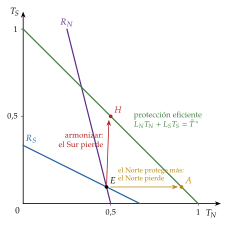
Fuente: elaboración propia a partir de Grossman y Lai (2004), con el ejemplo del texto (\(v=b=1\), \(d=0{,}5\), \(L_N=L_S=1\), \(\kappa=1\)).
iii) Implicaciones
Hay un motivo para un acuerdo: sin coordinación, la protección mundial es demasiado baja, porque cada país no tiene en cuenta lo que su protección aporta a los consumidores de los demás.
El país que innova y tiene un mercado grande protege más: la protección fuerte del Norte y la débil del Sur no son un error del Sur, sino su interés nacional.
La eficiencia no exige armonizar: unos mínimos iguales para todos, como los del ADPIC, son una forma de llegar al óptimo, y la más cara para el Sur.
Por eso el ADPIC solo fue aceptable en un paquete: el Sur aceptó perder en propiedad intelectual a cambio de ganar en agricultura y textiles. Y por eso reclama flexibilidades, como las de la salud pública (II.4).
c) Extensiones
Innovación e imitación en el tiempo: en el modelo de equilibrio general dinámico de Helpman (1993), endurecer la protección en el Sur frena la imitación, que es la forma en que la producción pasa al Sur; el Sur pierde siempre, y el Norte también puede perder a largo plazo, porque la producción sigue concentrada en él y queda menos trabajo para inventar.
El canal importa: si la tecnología pasa al Sur por inversión directa de las multinacionales y no por imitación, más protección atrae más inversión y acelera la innovación.
Más protección no siempre es más innovación: un monopolio más largo puede frenar a los innovadores siguientes, que construyen sobre las ideas anteriores.
d) Evidencia empírica
Las ganancias del ADPIC se concentran en el Norte: McCalman (2001) estima que la armonización de patentes transfirió rentas sobre todo hacia Estados Unidos, con mucho el principal ganador, desde casi todos los demás países, en especial los países en desarrollo, como predice el modelo.
Más protección, más transferencia por inversión: tras las reformas de las patentes en 16 países, las multinacionales estadounidenses cobraron más regalías de sus filiales en ellos y les dedicaron más gasto en investigación.
Pero no más investigación para el Sur: tras el ADPIC aumentó la inversión en medicamentos para las enfermedades de los países ricos, pero no en las que afectan sobre todo a los pobres.
e) Valoración
El modelo da la clave para leer el acuerdo: el ADPIC corrigió una protección mundial demasiado baja, pero lo hizo de la forma que más pagaba el Sur.
Su límite es que mide la protección con un solo número; en la práctica importan también las excepciones, las licencias obligatorias y el agotamiento, que son justo los márgenes que el Sur ha reclamado. Con esta lógica se lee la estructura del acuerdo (II.3).
C. Anexo: la preferencia nacional en la contratación pública
El modelo de R. E. Baldwin (1970) que, en el apartado III.1.1, se cuenta de palabra. \(G\) es la compra pública, \(S^d\) la oferta nacional y \(p^*\) el precio mundial.
a) Idea
Los gobiernos compran mucho más a sus empresas nacionales que los particulares: es el sesgo nacional de la contratación pública. ¿Distorsiona el comercio? R. E. Baldwin (1970) dio una respuesta sorprendente: muchas veces, no.
b) Modelo
i) Supuestos
Un país pequeño, un bien homogéneo y competencia perfecta: la oferta extranjera es perfectamente elástica al precio mundial \(p^*\), y la nacional, \(S^d(p)\), creciente.
El gobierno compra una cantidad fija \(G\), y la política de compras le obliga a comprar solo a productores nacionales; los particulares compran donde quieran.
ii) Desarrollo
Caso 1: la compra pública es menor que la producción nacional, \(G<S^d(p^*)\) (gráfico 9, \(G_1\)):
los productores nacionales venden \(G\) al gobierno y el resto a los particulares al precio mundial;
los particulares sustituyen lo que ya no les venden los nacionales por importaciones: la producción, los precios y el volumen de importaciones no cambian. La preferencia solo reetiqueta quién compra a quién.
Caso 2: la compra pública supera la producción nacional, \(G>S^d(p^*)\) (\(G_2\)):
para conseguir \(G\) de productores nacionales, el gobierno tiene que pagar un precio \(p_g>p^*\), tal que \(S^d(p_g)=G\);
sube la producción nacional, bajan las importaciones y el contribuyente paga \((p_g-p^*)\,G\), del que una parte es renta de los productores y otra, un coste de eficiencia.
El resultado:
\[G\leq S^d(p^*)\ \Longrightarrow\ \Delta p=\Delta M=0;\qquad G>S^d(p^*)\ \Longrightarrow\ p_g=(S^d)^{-1}(G)>p^*\tag{3}\]
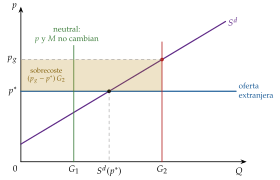
iii) Implicaciones
En los bienes que también compran los particulares, la preferencia nacional suele ser inocua para el comercio: abrir esas compras da poco acceso nuevo.
Muerde donde el gobierno es casi el único comprador: obras públicas, defensa, equipos ferroviarios, sanitarios o de telecomunicaciones. Ahí se concentran las ganancias de un acuerdo como el ACP, y ahí están las empresas españolas de ingeniería y construcción.
c) Extensiones
Con pocos licitadores, discriminar puede abaratar las compras: si las empresas nacionales son menos eficientes, favorecerlas un poco obliga a las extranjeras a pujar más bajo. La transparencia que exige el ACP importa a menudo más que la preferencia.
Con rendimientos crecientes, la preferencia puede atraer producción y cambiar la especialización, como un arancel.
d) Evidencia empírica
El sesgo nacional es grande: en la UE, pese a sus directivas de contratación, la probabilidad de que una empresa gane un contrato en otro Estado miembro es muy inferior a la de ganarlo en el suyo.
e) Valoración
El modelo explica por qué el ACP se centra en sectores concretos, en umbrales y en la transparencia de los procedimientos, y por qué muchos países en desarrollo, que usan las compras públicas como política industrial, no se adhieren.
Su límite es suponer competencia perfecta y bienes que compran también los particulares; con pocos licitadores y bienes a medida, la preferencia sí distorsiona.
D. Anexo: conceptos
Compromiso horizontal: el que se aplica a todos los sectores de la lista de un miembro (normalmente, sobre la entrada temporal de personas o la adquisición de inmuebles).
Consolidar: comprometerse a no volver atrás; en servicios, inscribir en la lista un nivel de apertura que no se puede reducir sin compensar a los afectados.
Agotamiento de los derechos: momento en que el titular pierde el control sobre la reventa de un producto legítimo; nacional, regional (en la UE) o internacional.
Licencia obligatoria: autorización del gobierno para usar una patente sin consentimiento del titular, a cambio de una remuneración adecuada.
Importación paralela: importación de un producto legítimo comprado en otro mercado, sin permiso del titular del derecho.
ADPIC-plus: obligaciones de propiedad intelectual de los acuerdos regionales que van más allá de los mínimos del ADPIC (plazos más largos, protección de datos de prueba, prórroga de patentes por retrasos administrativos).
Iniciativa conjunta: negociación entre un grupo de miembros de la OMC, abierta a todos, sin mandato de la Conferencia Ministerial; sus resultados se aplican mediante las listas (y se extienden por la NMF) o piden entrar en el anexo 4.
Masa crítica: proporción del comercio de un sector que deben representar los participantes de un acuerdo «cero por cero» para que el beneficio que se llevan los demás por la NMF sea aceptable (en el ATI, el 90 %).
E. Anexo: preguntas de test
Preguntas tipo test del primer ejercicio: simulador de test.
Bibliografía
Fuentes esenciales
Otras referencias
La defendió Francia en la Ronda Uruguay para proteger su cine y su televisión frente a los contenidos estadounidenses. Como el sector quedó cubierto por el acuerdo, Estados Unidos lo vio como una victoria a medias: podría liberalizarse en negociaciones futuras.↩︎
En Estados Unidos — Juegos de azar (DS285, 2005), el Órgano de Apelación aceptó que la prohibición de las apuestas a distancia protegía la moral y el orden público, pero no la amparó porque Estados Unidos no demostró que la aplicara igual a los proveedores nacionales de apuestas hípicas a distancia.↩︎
Paul Romer recibió el Premio Nobel de Economía en 2018 «por integrar las innovaciones tecnológicas en el análisis macroeconómico a largo plazo».↩︎
William Nordhaus recibió el Premio Nobel de Economía en 2018, con Paul Romer, «por integrar el cambio climático en el análisis macroeconómico a largo plazo».↩︎
Se llama así por el fabricante de genéricos Bolar Pharmaceutical, que perdió en 1984 un pleito en Estados Unidos por hacer esas pruebas; la ley de ese mismo año las permitió. En 2000, un grupo especial de la OMC aceptó la excepción de Canadá para preparar la autorización, pero no la de fabricar y almacenar genéricos antes de expirar la patente (DS114).↩︎
Por eso un productor de fuera puede vender un queso «estilo manchego» si demuestra que no engaña al consumidor, pero no un vino «estilo Rioja». La UE pide extender la protección reforzada a todos los productos y un registro multilateral; Estados Unidos, Australia y otros países con muchos inmigrantes europeos, que usan esos nombres como genéricos, se oponen.↩︎